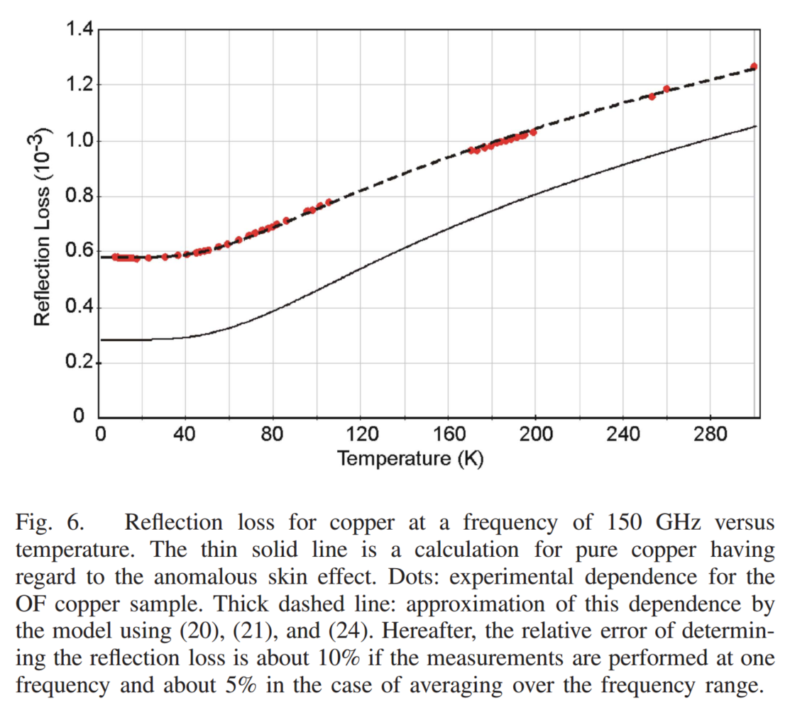
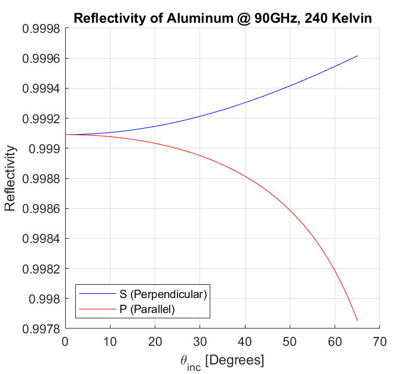

Systematics from Differential Reflection of Polarization
—
J. Cornelison
I calculate the conductivity of Aluminum using the reflection loss at 150GHz, scaled from 290K to 240K (from the data in Fig 6 of this paper, see below) the index of refraction for Aluminum is
$$
n_{90} \sim (1+i)\sqrt{2\frac{90}{150}\sigma_{Al}} = 2400
$$

Reflection loss as a function of temperature

Reflectivity of Aluminum as a function of incident angle, $\theta_i$.
For the detectors on BICEP3, I use the functions in keck_beam_map_pointing to calculate the incident angle on a mirror with $45^\circ$ tilt and $0^\circ$ roll and plot the incident angle as a function of location on the focal plane in Fig 1.2.
Incident angle as a function of pixel location on the focal plane per DK-angle.
For set of A and B detectors of a given pixel with an on-FPU polarization, the effective polarization changes due differential polarization reflection. The detector co-polar axes form vectors, $\hat{B}_A$ and $\hat{B}_B$, which can be separated into components, $\hat{V}_\perp$ and $\hat{V}_\parallel$ that are perpendicular and parallel to the plane of incidence respectively.
$$
\hat{B}_A = \left(\hat{B}_1\cdot\hat{V}_\parallel\right)\hat{V}_\parallel+\left(\hat{B}_1\cdot\hat{V}_\perp\right)\hat{V}_\perp
$$
The effective polarization orientation due to reflection off of the mirror becomes
$$
\tilde{B}_A = |r_\parallel|^2\left(\hat{B}_1\cdot\hat{V}_\parallel\right)\hat{V}_\parallel+|r_\perp|^2\left(\hat{B}_1\cdot\hat{V}_\perp\right)\hat{V}_\perp
$$
where $r_\parallel$ and $r_\perp$ are the parallel and perpendicular reflection coefficients respectively. Assuming Pol A and B detectors are orthogonal, the effective polarization angle due to differential polarization reflection is then just
$$
\tilde{\phi}_A = \phi_A + \tan^{-1}\left(\frac{\hat{B}_B\cdot\tilde{B}_A}{\hat{B}_A\cdot\tilde{B}_A}\right)
$$
Then, the effective pair-diff polarization angle becomes
$$
\tilde{\phi}_Q = \frac{1}{2}\left(\tilde{\phi}_A+\tilde{\phi}_B-90\right)
$$
Figure 1.3 shows the effective pair-diff polarization due to reflections off of the mirror.
Effective change in $\phi_Q$ due to differential polarization reflection as a function of location on the focal plane per DK-angle.